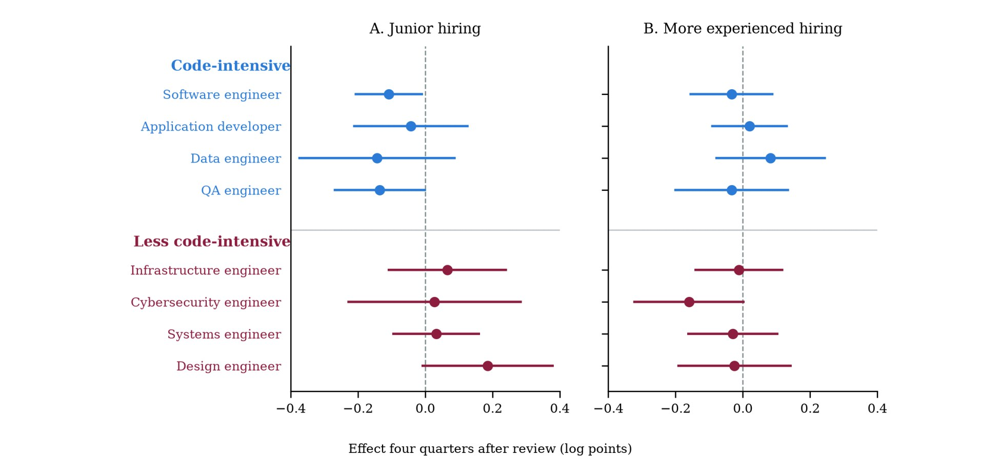

关于「AI 会不会抢走程序员工作」的讨论已经吵了三年，但绝大多数结论都建在问卷、暴露度评分或者开发者自述上——这些东西只能说明某项任务可能被自动化，不能说明企业真的少招了人。11 月 6 日，MIT 的 Lindsey Raymond 和微软研究院的 Eleanor Dillon 发了一份把这层窗户纸捅破的论文：不是问开发者感受，而是直接看企业后台的开票记录和招聘记录。样本是 5,414 家跨国公司，全球雇员总计 4,500 万，覆盖 38% 的美国编程劳动力。结论直接：在真正用上 Copilot 的企业里，初级软件工程师的季度招聘量下降约 40%，而资深软件工程师、系统与基础设施工程师，基本没动。
一、背景：为什么这份论文能拿到因果证据
过去做 AI 与就业的实证研究，最大的麻烦是「谁先采用 AI」不随机：业绩好的公司既先买工具、又同时在扩张招人，两个效应缠在一起，算出来的相关性往往是正的。
这份论文绕开的办法很巧：企业级软件不是工程师点个按钮就装上的，买不买、什么时候买，被季度采购周期事先钉死。作者把 GitHub 后台记录的合同审查时点当自然实验——两家差不多的公司，一家这季度轮到审查，一家要等下一季，它们的「AI 可及时间」就差好几个月，而这个差别跟当下招聘计划无关。
数据端也不含糊：一边是 GitHub 的行政记录，能看到企业究竟哪个月真正激活了 Copilot；另一边是 Revelio Labs 的就业数据，按岗位和资历拆出每季度的招聘与离职。两边按公司匹配后，观察的是真实发生的企业行为，不需要任何间接代理指标。
「招聘下降集中在交叉点上：只有同时属于高代码密度岗位、又属于初级资历的那一小块。代码密度本身不预测招聘下降，资历本身也不预测。」
二、核心内容：40% 是怎么算出来的
研究者先用 Copilot 上线前的岗位描述给每个技术岗位打一个「代码密度」分，再把员工按初级/资深切开，看合同审查之后 12 个月里各人群的招聘变化。结果不是「技术招聘整体下滑」，而是一个很窄的切面：只有同时属于高代码密度、又属于初级资历的岗位掉得最多。
具体到数字：在合规样本（compliers）里，初级软件工程师的季度招聘下降约 40%；同一时期，资深软件工程师、系统工程师、基础设施工程师的招聘没有可比的下降梯度。作者用四分位数把这种「交叉效应」画了出来，也正是这一条让论文的结论比常见的行业报告硬得多。

结构变化：入门岗位的入口在变窄
更值得注意的是构成的变化。采用 Copilot 之前，初级技术岗位的招聘里有 72% 进了代码密集型角色；按论文估计，采用之后这个比例降到 52%。也就是说，入门级招聘从「几乎都去写代码」变成了「写代码和不写代码各占一半」。这不是资深岗位被替代，而是新人的第一份工作被重新分配到了测试、运维、支持这类代码占比更低的岗位上。
减少的是招聘，不是裁员
论文把调整的边际拆得很清楚：企业减少的是外部招聘，尤其是从外部招初级工程师；离职率没有被推高，内部转岗也没有被压缩。这个区别在政策讨论里经常被混为一谈——「AI 导致裁员」和「AI 导致不再新增岗位」，对在职的人是两件完全不同的事。
三、各方反应：另一组访谈数据对得上
巧合的是，Anthropic 同期发布的企业研究得出了方向一致的观察。研究团队对 58 家企业客户做了 66 次面对面访谈，发现直接因为 AI 裁员的案例很少，但约三分之二的公司承认因 AI 减少了招聘；有 9 家削减了外包和离岸承包商。两组数据用的是完全不同的方法——一组是后台行政数据，一组是深度访谈——却都指向「不裁员，但少招人」。
真正的矛盾在于它和实验证据打架。多项随机对照实验显示，新手从 AI 编程助手获得的单任务效率提升最大，按常理应该最抢手。论文的解释是：单任务生产率上升不等于劳动力需求上升——如果新人的工作本就是写样板代码、查语法、改简单 bug，而这些恰好是 Copilot 最擅长的，「新人更快」的结果就是「不需要那么多新人」。
窗口期内 Cursor、Claude Code 的企业版陆续进场，AI 编程助手从「个人订阅」变成「公司统一采购」。这意味着这 40% 对行业只是下限：采购一旦变成企业级部署，采用速度只会更快。
四、深度解读：三件事值得多想一层
第一，被砍掉的是训练通道，不只是岗位
软件行业有一条隐性契约：新人从写简单代码开始，两三年长成能独立设计系统的人。初级岗位不只是产出，更是培养管道的第一段。企业省下了这部分成本，但五年后需要的「有经验的工程师」，恰恰来自今天没有发生的招聘。这笔账会延迟 3 到 5 年才在行业层面显现。
第二，技能的重心从「会写」转向「会审」
72% 到 52% 这个变化，本质上说的是岗位内容在重组：代码密集度低的入门岗位（测试、运维、安全运营、技术支持）没有减少，减少的是纯编码入口。这跟企业侧的实际招聘描述是对得上的——要求里越来越多地出现「review AI-generated code」「设计评测与验证流程」这类措辞。对个人来说，可操作的结论不是「别学编程」，而是「别只会写，要会判断写得对不对」。
第三，这是企业层面的效应，不是全国就业的判决书
论文自己把边界划得很克制：估计的是采用企业内部的就业反应，不是全国劳动力市场的均衡结果。被大公司少招的人，可能去了小公司或别的技术岗位。读成「程序员要失业了」是过度解读，读成「AI 对招聘没影响」则是把它没说的部分当成了结论。
五、一句话总结
这份论文的价值不在于它给出了一个惊人的数字，而在于它第一次用企业的真实开票和招聘记录证明：AI 编程助手改写的不是「有多少工程师」，而是「工程师从哪个入口进来」——40% 的初级招聘消失，资深岗位原地不动，行业的入口正在变窄。
原文：AI-Assisted Programming and Labor Demand（MIT 经济系官方 PDF，Raymond & Dillon，2026-11-06）｜Anthropic：58 家企业客户的 AI 采用访谈｜配图：论文 Figure 2、Figure 8